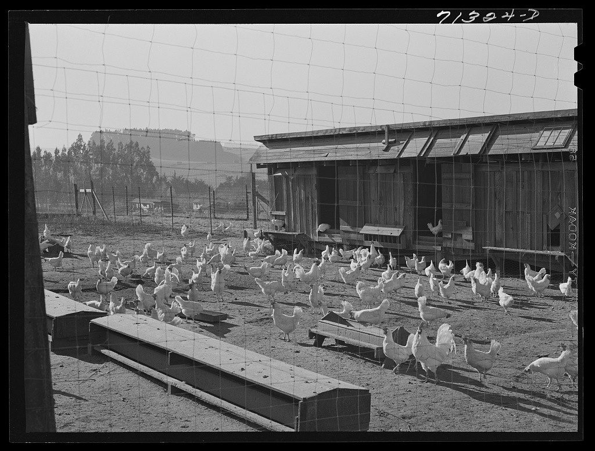

Disclosure: some links on this site are affiliate links. As an Amazon Associate I earn from qualifying purchases, at no extra cost to you.
Keep Winter Eggs From Freezing
On freezing days an egg can freeze and crack within a few hours of being laid. A few small habits keep your backyard eggs safe and clean all winter.

Sonoma County, California. White leghorn chickens in a yard. Eggs are sold and the feed is bought through cooperatives in this county. All c · Photo: Library of Congress (no known restrictions)